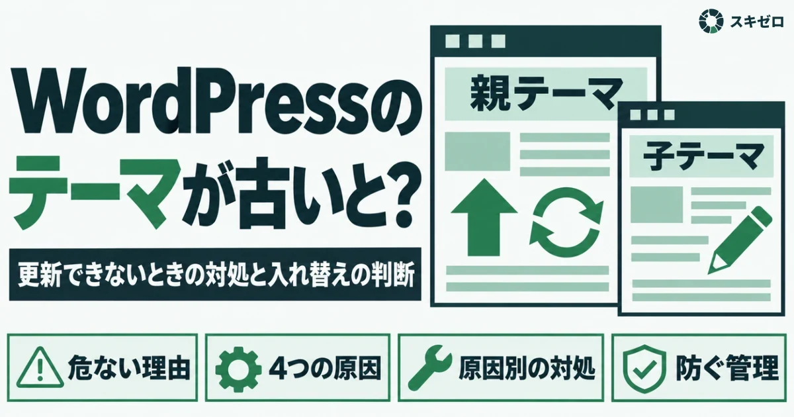
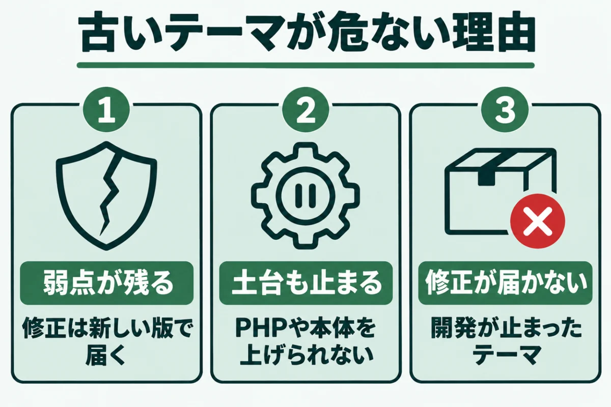
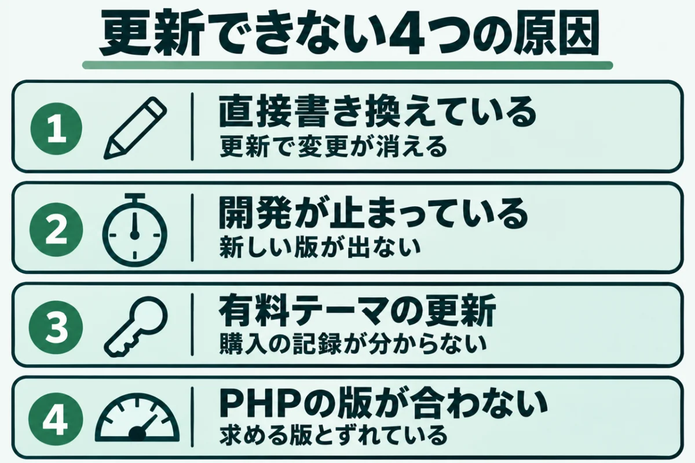
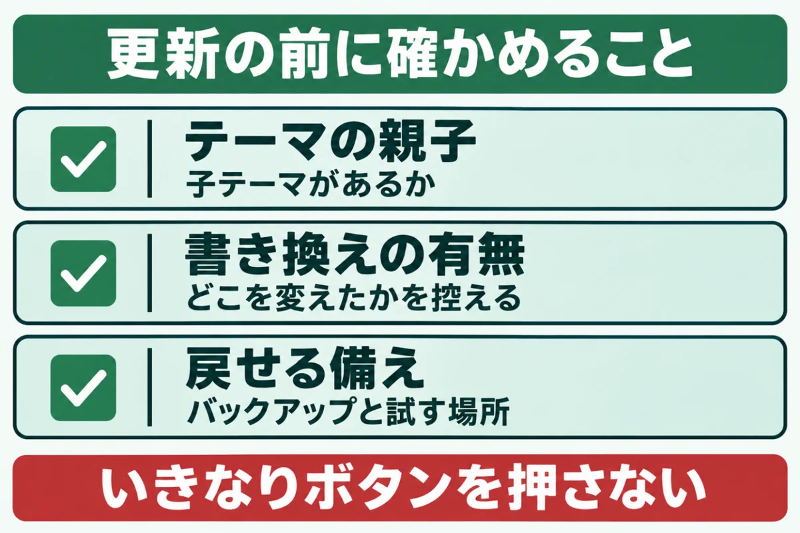
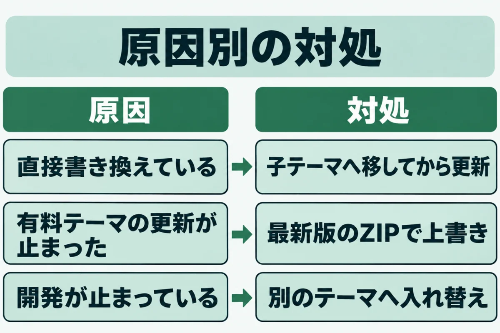
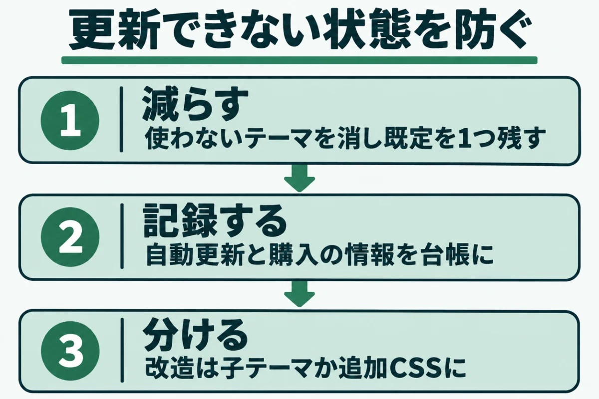

WordPressのテーマが古いと危ない？更新できないときの対処原因の見分け方と入れ替えの判断

「WordPressのテーマに更新の知らせが出ているのに、押すのが怖い」と止まっていませんか？
テーマは、サイトの見た目と動きを決める部品です。制作会社が手を入れたテーマや、買ってから何年もたつテーマは、更新で崩れないかが心配になるでしょう。
この記事では、テーマが古いままだと何が危ないのかを最初に整理しました。更新できない原因の見分け方と、原因ごとの対処、入れ替えを考える目安まで順に紹介します。
内容は、WordPressの公式ドキュメントと、運営者の自社サイトでの対応をもとにしました。自社のテーマの名前と版を手元に控えてから読み進めてください。
WordPressのテーマが古いまま更新できないと危ない理由

WordPressのテーマが更新できないままだと、テーマの弱点と、土台の古さの両方が残ります。見た目が変わらないので、困っていることに気づきにくいのが難しいところです。
危ない理由は、大きく分けて2つあります。テーマそのものの弱点と、テーマが足かせになってほかの更新まで止まることです。どちらも、放っておくほど直すのに手間がかかるでしょう。
テーマにも弱点が見つかり、更新で直される
テーマはPHPで書かれたプログラムで、プラグインと同じように弱点が見つかることがあります。弱点の修正は、テーマの新しい版として配られるのがふつうです。古い版のままなら、知られた弱点を抱えたままになります。WordPress.orgでは、安全上の問題は影響の大きい問題として扱われる決まりです。問題が解決するまで、テーマが配布の一覧から外されることもあります。使っていない古いテーマも、ファイルが残っていれば同じように弱点を抱えるでしょう。
テーマが古いと、PHPや本体を上げられなくなる
古いテーマは、新しいPHPやWordPress本体に対応していないことがあります。そのため、テーマが止まるのを恐れて、土台の更新まで先送りになりがちです。テーマ1つのせいで、サイト全体が古いまま残る形になります。php.netによると、PHP 8.2の修正は2026年12月31日で終わる予定です。運営者の自社サイトでも、古い有料テーマ用のプラグインがPHP 8でエラーを起こしました。管理画面が開かなくなり、新しい版に入れ替えてからPHPを切り替えています。
WordPressのテーマが更新できない4つの原因

WordPressのテーマが更新できないとき、原因はおおむね4つに分けられます。原因が違えば対処も違うので、先に自社がどれに当たるかを見極めましょう。
1つのサイトで、いくつかの原因が重なっていることも珍しくありません。当てはまるものに、すべて印をつけておいてください。印の数が多いほど、作業の段取りを先に考える必要があります。
① テーマのファイルを直接書き換えている
制作会社が、テーマのファイルに直接手を入れて作ったサイトがあります。この場合、テーマを更新すると、書き換えた部分が新しいファイルで上書きされてしまうのです。公式の説明では、子テーマを使えば変更を失わずに親のテーマを更新できるとされています。子テーマを使わずに改造したテーマは、更新で変更が消えるのです。デザインの崩れや、独自の機能が動かなくなる形で表れるでしょう。更新が怖いと感じる理由の多くは、この形です。
② テーマの配布や開発が止まっている
作者が開発をやめたテーマには、新しい版そのものが出ません。更新の知らせが出ないので、更新できないことにも気づきにくいでしょう。WordPress.orgの配布ページで、最終更新の日付を見てください。何年も更新がないテーマは、修正が届かない前提で考える必要があります。WordPress.orgでは、問題のあるテーマが一覧から外されることもあるのです。有料テーマなら、販売元のサイトで今も売られているか、更新の記録があるかを確かめます。
③ 有料テーマの更新を受け取れていない
有料テーマの多くは、WordPress.orgではなく販売元から更新を配っています。管理画面に知らせが出る仕組みは、テーマごとに違うのがふつうです。購入した会員のページから、新しい版を自分で取ってくる形のものもあります。購入したときのアカウントが分からず、更新が止まることがよくあるのです。制作会社が自分の名義で買っていた場合は、自社では取れないこともあるでしょう。購入の記録と、更新を受け取れる期間を確かめてください。
④ サーバーのPHPの版が合わない
テーマには、動くのに必要なPHPとWordPressの版が書かれています。公式の説明では、「Requires PHP」と「Requires at least」がその欄です。新しい版のテーマが求めるPHPより、サーバーのPHPが古い場合があります。WordPressの自動更新の仕組みは、PHPが足りないテーマの更新を入れません。逆に、テーマが古すぎて新しいPHPで動かない場合もあるでしょう。どちらの向きで合っていないのかを、まず確かめてください。
- 参考：Main Stylesheet (style.css)｜WordPress Developer Resources
- 参考：WP_Automatic_Updater::should_update()｜WordPress Developer Resources
WordPressのテーマが更新できないときに先に確かめること

WordPressのテーマが更新できないときも、いきなり更新ボタンを押すのは避けましょう。先に今の状態を知っておくと、崩れたときに戻せます。
確かめるのは、テーマの親子の関係、書き換えの有無、戻せる備えの3つです。どれも、管理画面とサーバーの管理画面で見られます。急いでいるときほど、この確認を飛ばさないでください。1つずつ見ていきましょう。
使っているテーマと、親子の関係を見る
管理画面の「外観」から「テーマ」を開くと、有効なテーマの名前と版が分かります。テーマの詳細の画面に「子テーマです」という表示があれば、子テーマを使っている形です。子テーマがあれば、親のテーマは比較的安全に更新できます。子テーマの中の変更は、親を更新しても残るからです。「ツール」の「サイトヘルス」でも、有効なテーマとその親のテーマは残すよう案内されます。版の番号と更新の知らせの有無も、このときに控えておきましょう。
テーマを書き換えた部分があるかを聞く
子テーマがない場合は、テーマのファイルに手が入っているかを確かめます。いちばん確実なのは、サイトを作った制作会社に聞く方法です。連絡が取れないときは、同じ版のテーマを配布元から取り、ファイルを比べるやり方もあります。書き換えがあると分かったら、更新の前に控えを取ることが欠かせません。どのファイルのどこを変えたかを、日付とあわせて一覧にしておきましょう。あとで子テーマへ移すときの手がかりになります。
バックアップと、試す場所を用意する
更新の前には、ファイルとデータベースの両方のバックアップを取ってください。サーバーの自動バックアップがあっても、作業の直前に自分で取っておくと安心です。できれば、本番と同じ中身の試す場所で先に更新を試しましょう。サーバー会社によっては、管理画面から試す場所を作れる機能があります。本番で試すのは、戻し方を決めてからにしましょう。何年も更新していないサイトの進め方も、別の記事にまとめています。WordPressを何年も更新していないときの安全な更新手順｜一気に上げずに段階的にを見てください。
WordPressのテーマが更新できないときの対処（原因別）

WordPressのテーマが更新できない原因が分かったら、原因ごとに3つの対処から選びます。書き換えを移す、新しい版を取り直す、テーマを入れ替えるの3つです。
PHPの版が合わない場合は、ほかの3つの対処とあわせて進めることになるでしょう。作業の前に、ファイルとデータベースのバックアップが済んでいるかをもう一度確かめてください。
書き換えがあるなら、子テーマへ移してから更新する
直接書き換えたテーマは、変更を子テーマへ移してから更新します。子テーマは、親のテーマを土台にして、変えたい部分だけを持つテーマです。公式の説明では、子テーマの「Template」の欄に、親のテーマのフォルダの名前を正しく書きます。移す前に更新すると、改造した部分が消えてしまうので順番を守ってください。見た目の小さな調整なら、管理画面の「追加CSS」に移せることもあります。改造が多い場合は、作った制作会社に頼むのが安全でしょう。
有料テーマは、販売元から新しい版を取って上書きする
有料テーマは、販売元の会員のページから最新版のZIPファイルを取ってきます。WordPress 5.5からは、ZIPファイルを上げてテーマを上書きできるようになりました。「外観」の「テーマ」で新しいテーマを追加し、ZIPを選んで上げる流れです。今の版と上げた版を見比べる画面が出るので、版の番号を確かめてから置き換えましょう。購入の記録が見つからない場合は、販売元に問い合わせてください。買い直しが必要になることもあります。
開発が止まっているなら、テーマの入れ替えを考える
新しい版が出ないテーマは、いくら待っても更新できません。この場合は、開発が続いている別のテーマへの入れ替えを考えます。入れ替えは見た目が変わるので、作り直しに近い作業になるでしょう。PHPのサポートの終わりに合わせて計画すると、作業の目標が決めやすくなります。PHPのサポートが終わる時期は、PHPのサポート終了とは？放置の危険と確認・更新の手順｜8.2は2026年末で終了にまとめました。入れ替えのあとは、すべてのページの表示を確かめましょう。
WordPressのテーマが更新できない状態を防ぐ管理のしかた

WordPressのテーマが更新できない状態は、作るときと持ち続けるときの決めごとでかなり防げます。新しく作り直すときにも、そのまま使える考え方です。
決めごとは、テーマを減らすこと、記録を残すこと、改造を分けることの3つになります。制作会社に頼むときは、最初に伝えておきましょう。担当者が替わっても続けられるよう、文書に残しておくと安心です。
使わないテーマを消し、既定のテーマを1つ残す
使っていないテーマは、サーバーから削除しておきましょう。WordPressのサイトヘルスも、安全のために使っていないテーマの削除を勧めています。ただし、WordPressに付いてくる既定のテーマは1つ残すのが勧めです。有効なテーマに不具合が出たとき、既定のテーマが代わりに使われます。子テーマを使っている場合は、親のテーマも消さないでください。テーマを減らすと、更新の手間と確かめる範囲も小さくなります。
自動更新と、購入の記録を管理する
配布ページから入れたテーマは、WordPress 5.5から自動更新を1つずつ有効にできます。「外観」の「テーマ」で、テーマの詳細の画面を開いて切り替えてください。有料テーマは、購入したアカウント、購入日、更新を受け取れる期間を台帳に残しておきます。購入は、できるだけ自社の名義とアドレスで行うのが安全です。担当者が替わっても、更新を受け取り続けられるからでしょう。台帳は、サーバーやドメインの情報と同じ場所にまとめましょう。
改造は子テーマか追加CSSに分ける
見た目や機能を変えたいときは、テーマのファイルを直接書き換えないようにしましょう。子テーマか、管理画面の「追加CSS」に分けておけば、親のテーマを更新しても残ります。制作会社に頼むときも、子テーマで作ってもらうよう最初に伝えてください。どこに何を書いたかを、引き継ぎの資料に残すことも大切です。資料があれば、別の会社に頼むときも作業が早く進みます。テーマの更新を怖がらずに済む形を、最初から作っておきましょう。
URLを入れるだけで、WordPress本体やPHPの版、プラグインなど8項目を無料で判定します。テーマの更新や入れ替えの作業は、対策作業（14,800円から・税込）でもお受けしています。
無料で診断するWordPressのテーマが更新できない問題に関するよくある質問
テーマの更新ボタンを押したら、デザインが崩れました。どうすればよいですか？
まず、更新の前に取ったバックアップから元に戻してください。そのうえで、テーマのファイルに直接手が入っていなかったかを確かめましょう。書き換えがあったなら、その部分を子テーマへ移してから、もう一度更新します。バックアップがない場合は、サーバーの自動バックアップから戻せるかを見てください。自分で戻すのが難しいときは、制作会社に早めに相談しましょう。
テーマを更新しないまま使い続けると、すぐに乗っ取られますか？
すぐに被害が出るとは限りません。ただし、テーマに弱点が見つかっていれば、そこを狙われるおそれがあります。それ以上に困るのは、テーマのせいでPHPや本体の更新まで止まることです。今の版に知られた弱点がないかは、テーマの名前と版で調べられます。期限を決めて、更新か入れ替えのどちらかに進みましょう。目安は、PHPのサポートが終わる前です。
子テーマは、あとからでも作れますか？
作れます。子テーマは、親のテーマとは別のフォルダに置く小さなテーマです。ただし、親のテーマに直接加えた変更を、子テーマへ移す作業が要ります。どのファイルを変えたかが分からないと、移し漏れが出るおそれがあるでしょう。改造の量が多いときは、作った制作会社に頼むのが確実です。作ったあとは、子テーマを有効にして全ページの表示を確かめてください。
有料テーマの購入の記録が見つかりません。
まず、販売元に問い合わせて、購入の記録を探してもらいましょう。制作会社が代わりに買っていた場合は、制作会社に確かめるのが近道です。記録が見つからなければ、新しく買い直して最新版を取る方法になります。買い直しの費用と、別のテーマに入れ替える費用を比べて決めてください。今後のために、購入の情報は台帳に残しておきましょう。
使っていないテーマも更新したほうがよいですか？
使う予定がないなら、更新より削除をおすすめします。止めているテーマも、ファイルはサーバーに残っているからです。ただし、WordPressに付いてくる既定のテーマは1つ残し、最新版にしておきましょう。子テーマを使っているなら、親のテーマも消さずに更新してください。削除の前には、念のためバックアップを取っておくと安心です。
まとめ
WordPressのテーマが更新できないままだと、テーマの弱点が残ります。そのうえ、PHPや本体の更新まで止まりがちです。原因は、直接の書き換え、開発の停止、有料テーマの更新の受け取り、PHPの版の4つに分けられます。
バックアップを取ってから、子テーマへ移す、取り直す、入れ替えるの中から選ぶのが基本です。使わないテーマを減らし、改造は子テーマに分けておきましょう。
まずは、今の状態を知るところから。
URLを入れるだけで、数十秒で判定が出ます。登録はいりません。